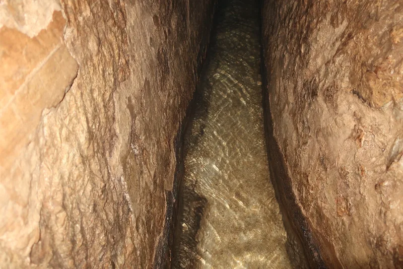
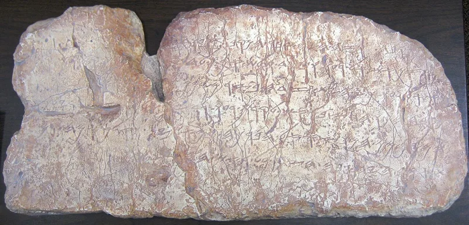

King David was called a legend, until 1993
ConcededSkeptical scholars grant this themselves. Argue it from their sources, not yours.
What scholars used to say
Within living memory it was respectable to call King David a legend, like King Arthur. Then in 1993 the Tel Dan stele turned up.
It is a victory stone in Aramaic from the 9th century BC. It names "bytdwd," the House of David.
That is a royal line named within about 140 years of David. The rival reading, "temple of Dod," has been all but dropped.
Three more finds
Hezekiah's tunnel runs under Jerusalem. The workmen carved the Siloam inscription inside it.
2 Kings 20:20 notes the same waterworks in one line. Sennacherib's own prism boasts of shutting Hezekiah up "like a caged bird" in 701 BC.
It does not say the city fell, which matches 2 Kings 19. The Cyrus Cylinder records Persia sending exiles home and rebuilding their temples.
That is what Ezra 1 takes for granted.
Their answer, at full strength
Israel Finkelstein and the mainstream reply that a king who lived is not a miracle that happened. Tel Dan proves a line of David.
It does not prove a kingdom of the size the Bible describes. Tenth-century Jerusalem looks thin in the ground.
Sennacherib's retreat has plain causes. His own prism says Hezekiah paid a huge tribute.
Disease and Egyptian pressure are on the table too. The Cyrus Cylinder sets out broad Persian policy, not a rule about Israel.
And the same spade makes trouble. Jericho was a ruin long before any likely Joshua, and the exodus has left no trace in Sinai.
How strong is this argument?
Granted, for the finds themselves. All four are undisputed and sit in museums.
The House of David reading is now agreed on all sides. So claim the right thing.
The Bible is history-shaped writing about real kings, real wars and real waterworks. It keeps being proved right where confident doubt said it would fail.
Then say plainly that stones confirm kings, not theology. Raise Jericho yourself, before anyone else does.
What to say
"A hundred years ago David was Arthur. Then an enemy king's stone turned up with his dynasty on it."



How they answer this — at its strongest
A king who existed is not a thing God did, and Jericho cuts the other way.
Israel Finkelstein and the minimalist-leaning mainstream reply that a king who existed is not a thing God did. Tel Dan proves a line of David. It does not prove a united kingdom on the scale the Bible describes. Archaeology still argues about that, through the low chronology and the thin tenth-century remains in Jerusalem.
Sennacherib pulled back for reasons of his own. His prism says Hezekiah paid heavily, and disease or Egyptian pressure are on the table too. The Cyrus Cylinder sets out broad Persian policy, not a plan for Israel.
And the same spade digs up problems this entry leaves out. Jericho was a ruin centuries before any likely Joshua. The exodus has left no trace in Sinai. Archaeology confirms the setting. It stays carefully neutral about the miracles.
The verdict
Conceded for the finds: stones confirm kings, not God, so raise Jericho first.
Conceded for the finds themselves. Tel Dan, the tunnel, the prism and the cylinder are undisputed facts on display in museums, and the House of David reading is now agreed on all sides.
Claim the right thing. The Bible is history-shaped writing about real people and real events, proved right again and again against confident doubt. Then grant at once that stones confirm kings, not theology. Do not hide the Jericho problem. A skeptic who knows it will respect you for raising it first.
Sources
- Wikipedia, 'Tel Dan stele'
- Wikipedia, 'Siloam inscription' / Hezekiah's tunnel
- Wikipedia, 'Sennacherib's Annals' (Taylor Prism)
- British Museum / Wikipedia, 'Cyrus Cylinder'
- Biblical Archaeology Society